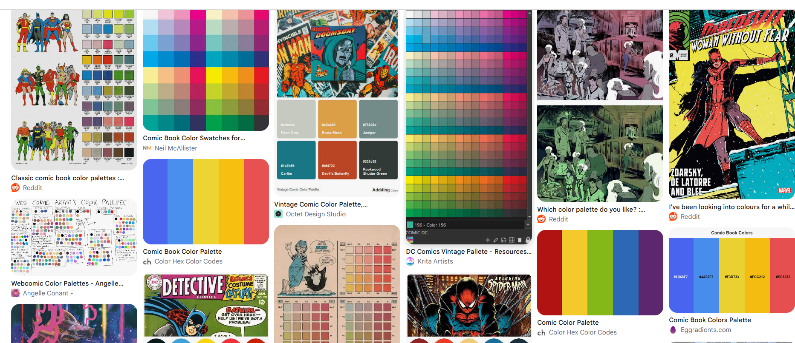

Project name
JavaScript · Web application
Software Developer
Concord, North Carolina
I'm an aspiring software developer and IT professional studying Information Technology with a concentration in Software Development at Central Piedmont Community College. I see software as a blend of art and science, where creativity and logical thinking come together to solve real problems. Through exploring Java, JavaScript, Python, HTML, and CSS, I'm building the skills to turn ideas into useful applications. My IT experience supporting technology operations across 17 restaurant locations, along with years of customer service experience, has taught me to approach challenges with patience, curiosity, and an understanding of the people who rely on technology. As our world becomes more connected, I'm excited to keep learning, explore what programming makes possible, and create software that makes everyday life easier.

JavaScript · Web application
JavaScript · Web application